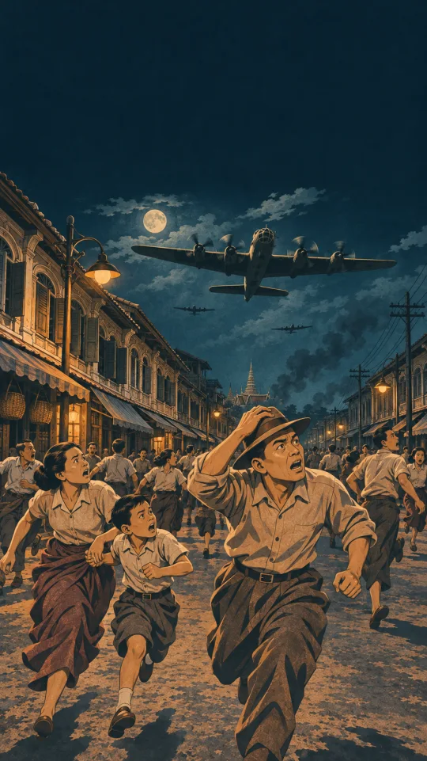
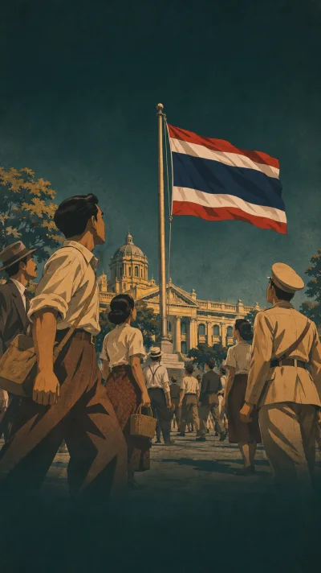

พ.ศ. 2475–2516
📖 Promt ย้อน ↶
🎬 ประวัติศาสตร์การเมืองไทยในรูปแบบการ์ตูนสั้น 🗳️ ย้อนดูคนและเหตุการณ์ที่เปลี่ยนการเมืองไทย


พ.ศ. 2475–2516
🎬 ประวัติศาสตร์การเมืองไทยในรูปแบบการ์ตูนสั้น 🗳️ ย้อนดูคนและเหตุการณ์ที่เปลี่ยนการเมืองไทย